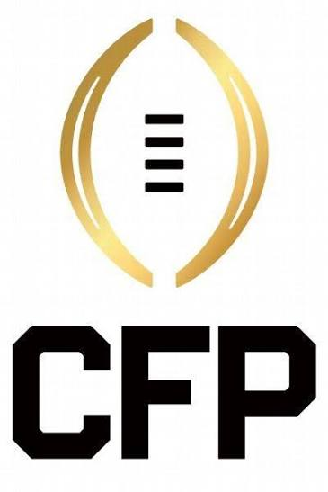
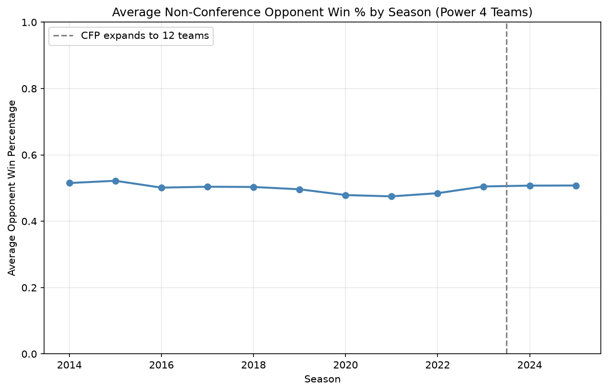
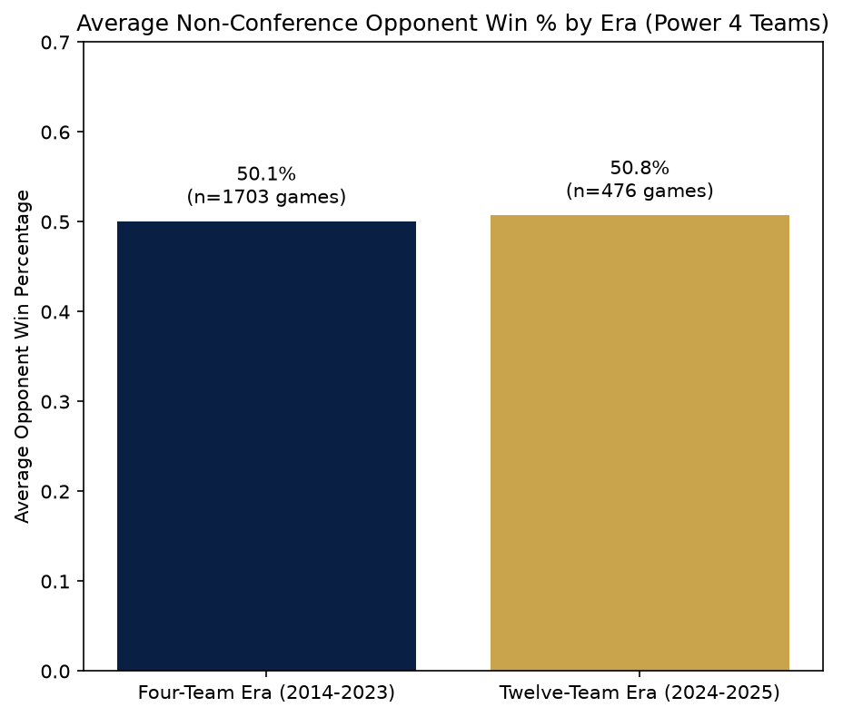

My name is Micah Shelley, and I am a data science student at the University of North Carolina at Charlotte. I have a strong interest in sports analytics, particularly in football, hockey, soccer, and volleyball. In my free time I enjoy watching sports, playing intramural sports, and playing in my band. I want to use my degree to pursue a career working with a sports team, providing analytical reports and insight to give advantage in competition. I would also be interested in working with a broadcasting team or working with individual athletes to measure wear on bodies through exercise and optimilizing recovery.
Research question: Has the expansion of the College Football Playoff from 4 to 12 teams changed how Power Conference teams schedule non-conference opponents? Specifically, did the average non-conference opponent win percentage drop in the 2024–2025 season compared to the four-team era (2014–2023)?
Context: From 2014 through 2023, the College Football Playoff selected only four teams, so a single non-conference loss could end a team's championship hopes: an incentive to schedule cautiously. Starting in 2024, the field expanded to twelve teams with guaranteed spots for the highest ranked conference champions, which could reduce the incentive to avoid tough non-conference opponents (Salaga & Fort, 2017; Eckard, 2019).
Relevance: This matters to athletic directors, coaches, and fans alike: schedule difficulty affects ticket sales, revenue-sharing "buy games" against smaller schools, and how meaningfully regular-season games contribute to the sport's competitive integrity (Winfree, 2020).
Source: All data was collected via the
College Football Data API
(College Football Data, n.d.), a free public API aggregating official NCAA
game and season-record data, using two endpoints: /games and
/records.
Unit of analysis: Each row represents one non-conference football game played by a Power Conference team (ACC, Big Ten, Big 12, or SEC) in a given season, from that team's perspective.
Key variables (conceptualized and operationalized):
conferenceGame flag.Size: 2,179 team-game rows spanning the 2014–2025 seasons, matched against a lookup table of 8,120 team-season win/loss records.
Missing values: Zero missing opponent win percentages in the final dataset, every non-conference opponent had a matching season record.
Assumptions: "Power Conference" is defined using each team's current-era conference (e.g., Oregon counts as Big Ten across the whole dataset, not Pac-12), since the Pac-12 largely dissolved in 2024 and no longer functions as a peer group of similar programs.
Using pandas, the raw API responses were processed as follows:
win_pct = wins / games_played for each team-season, stored in a
lookup dictionary keyed by (year, team).conferenceGame = True, since the question is
specifically about non-conference scheduling..isna().sum()).
Found none, so no rows needed to be dropped for incompleteness.Trade-off worth noting: opponent win percentage reflects each opponent's final season record, which includes games played after the matchup in question. This introduces a mild hindsight bias, a team's September opponent might have finished 8-4 partly due to games played in November, but full-season win percentage was used because most non-conference games are scheduled years in advance, long before either team's season-to-date form is knowable anyway.

Figure 1. Average non-conference opponent win percentage by season, with a dashed line marking the Playoff's expansion to 12 teams. The value fluctuates between roughly 47% and 52% across the whole period, with no visible drop after 2023, if anything, the two most recent seasons sit near the higher end of the range.

Figure 2. Direct comparison of the two eras. The twelve-team era's average (50.8%) is actually slightly higher than the four-team era's (50.1%), the opposite direction from the hypothesis. Note the sample size imbalance labeled on each bar, the four-team era spans 10 seasons versus only 2 for the twelve-team era, which matters for interpreting the result (see Limitations).
Taken together, these charts tell a consistent story: there is no visible pattern of Power Conference teams "softening" their non-conference schedules since the Playoff expanded. A two-sample t-test comparing individual games between eras returned t = -0.60, p = 0.55, far above the conventional 0.05 threshold for statistical significance, meaning the small uptick observed is entirely consistent with ordinary season-to-season noise.
What would be incorrect to conclude: it would be a mistake to read this as proof that the 12-team Playoff has no effect on scheduling incentives at all, two seasons of post-expansion data is a small sample, and other scheduling behaviors (e.g., number of Power-vs-Power matchups, willingness to play true road games, FCS "guarantee game" frequency) might respond differently than raw opponent win percentage does.
Full analysis notebook, dataset, and code available in the GitHub repository.
Data source: College Football Data. (n.d.). College Football Data API [Data set]. https://collegefootballdata.com